Michael Phelps
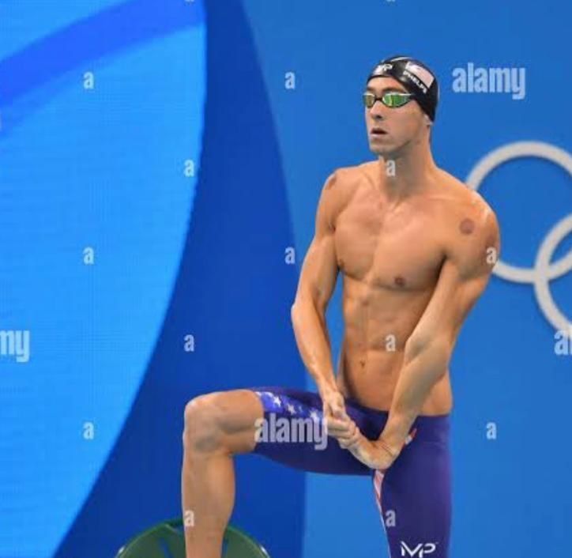
Le plus titré de l'histoire
23 médailles d'or olympiques, 28 médailles au total. Record du monde du 400m 4 nages.
"Tout est possible si vous y croyez assez."
Katie Ledecky
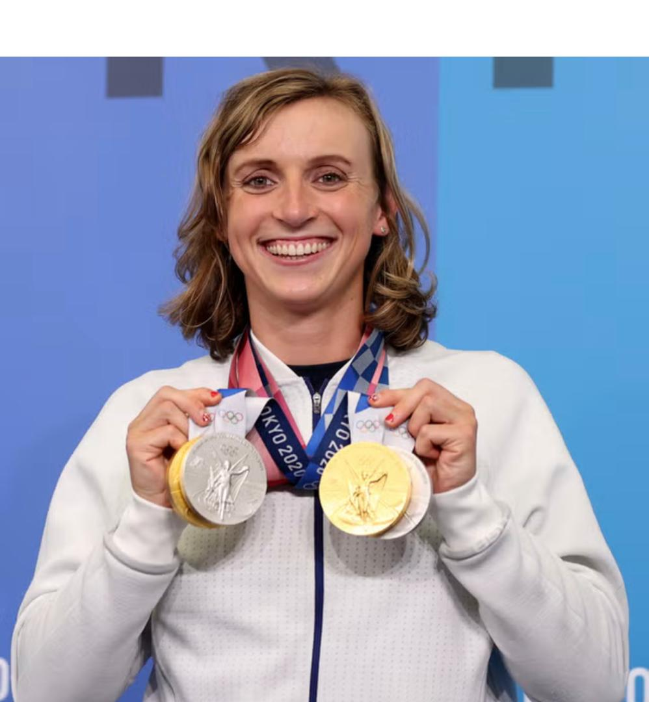
Reine du demi-fond
7 médailles d'or olympiques, records du monde sur 400m, 800m et 1500m libre.
"Je nage pour voir jusqu'où je peux aller."
Mark Spitz
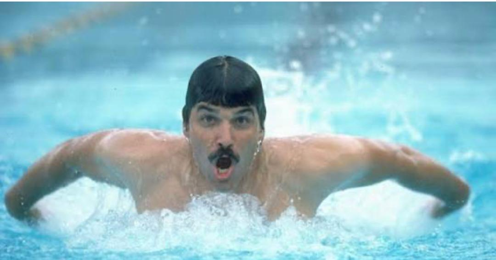
Légende des JO 1972
7 médailles d'or en un seul jeux (1972), 9 fois champion olympique.
"Je voulais être le meilleur, pas seulement gagner."
Dawn Fraser
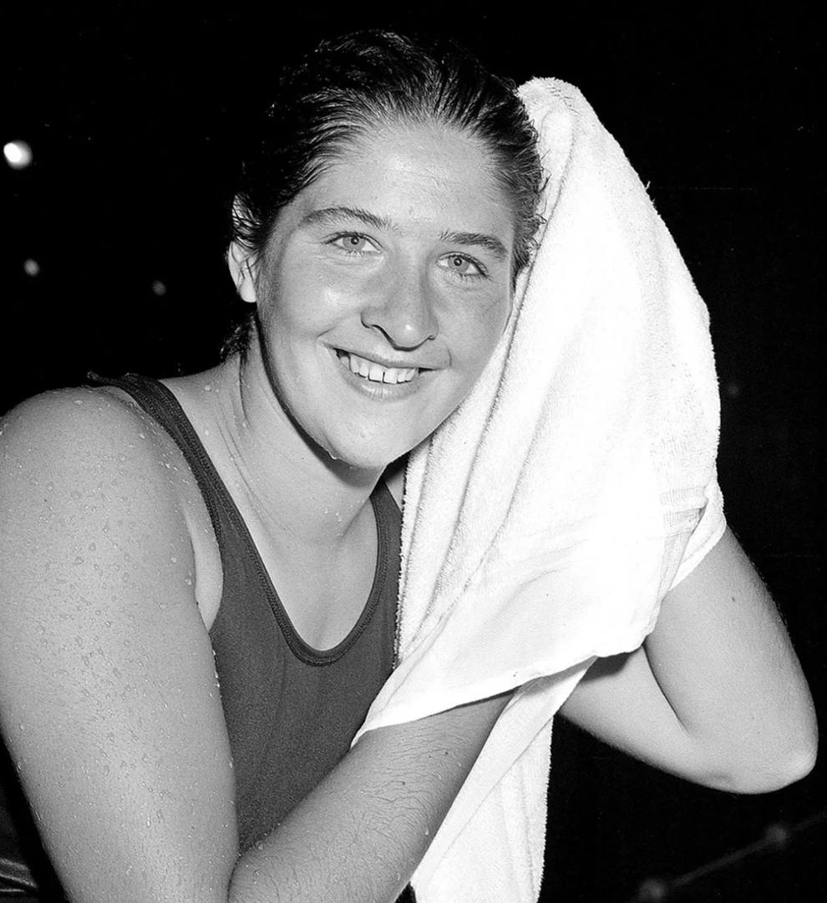
L'Australienne légendaire
4 médailles d'or olympiques, triple championne olympique du 100m libre.
"L'eau est mon élément, ma liberté."
Alexander Popov
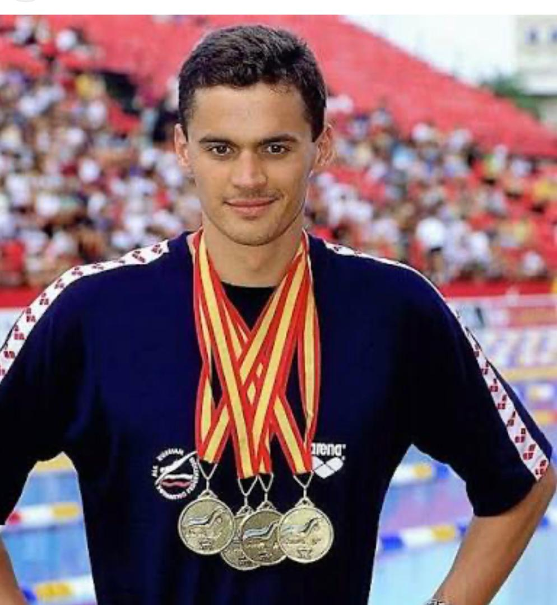
Nageur Russe
9 medailles olympiques (4medailles d'or et 5 medailles d'argent)
"While I'm swimming, I sing songs in my mind."
Ian Thorpe
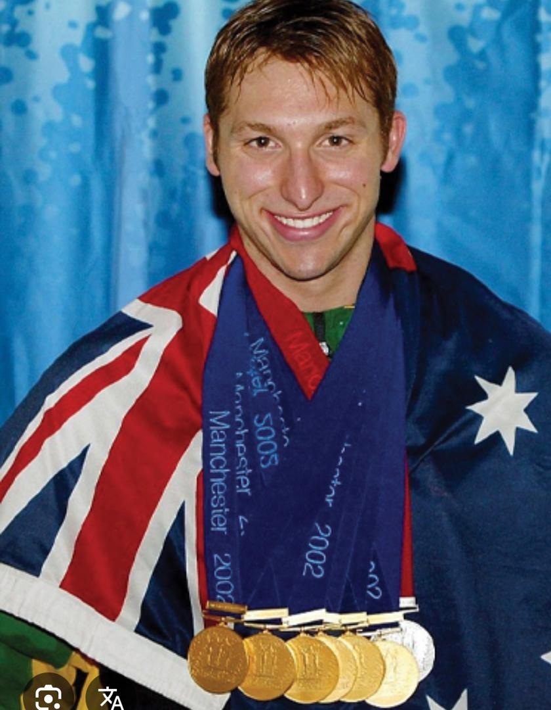
Nageur Australien
9 medailles olympiques (5 medailles d'or , 1 medaile bronze et 3 medailles d'argent)
« Pour moi, perdre n'est pas arriver deuxième. C'est sortir de l'eau en sachant que j'aurais pu mieux faire »
Alain Bernard
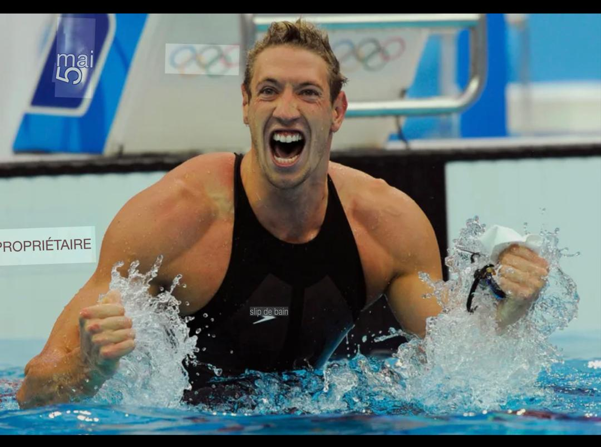
Nageur Français
4 medailles olympiques
"Pas de secret il faut passer du temps dans l'eau"
Pieter Van Den Hoogenband
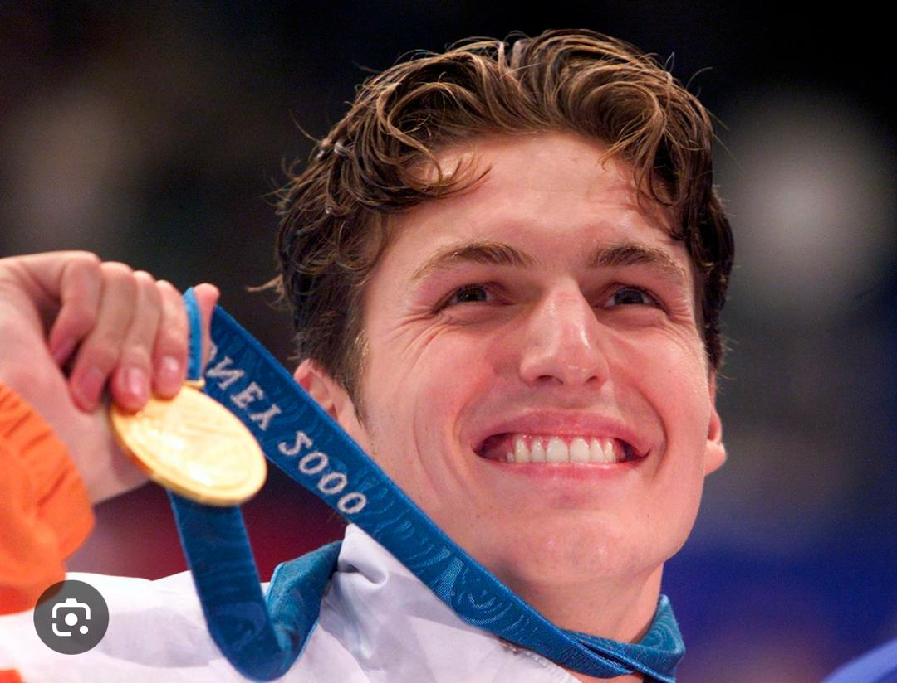
Nageur Néerlandais
7 medailles olympiques (3 or , 2 argent et 2 bronze)
« Ils sont forts. Beaucoup trop rapides. C'est une nouvelle génération et le temps est venu de me retirer. C'était ma dernière course ».
Grant Hackett
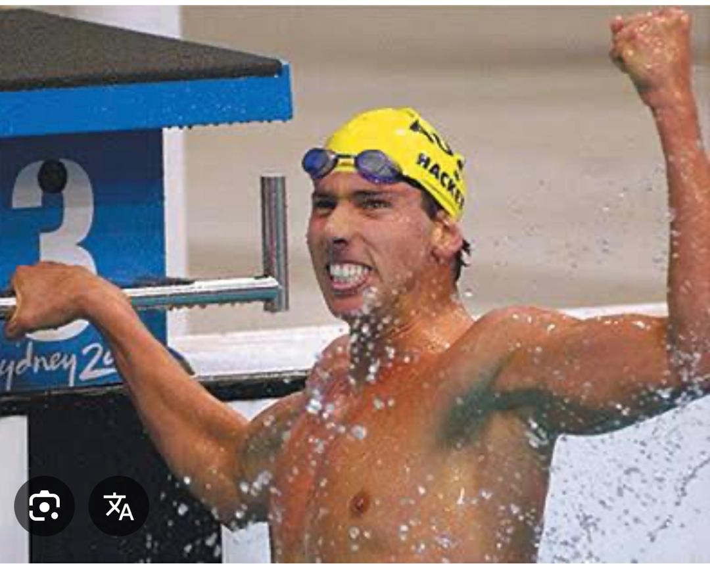
Nageur Australien
7 medailles olympiques (3 or , 3 argent et 1 bronze)
"Si c'est votre rêve, poursuivez-le sans relâche. Vous ne regretterez jamais d'avoir tout donné pour quelque chose qui en vaut la peine "
Jenny Thompson
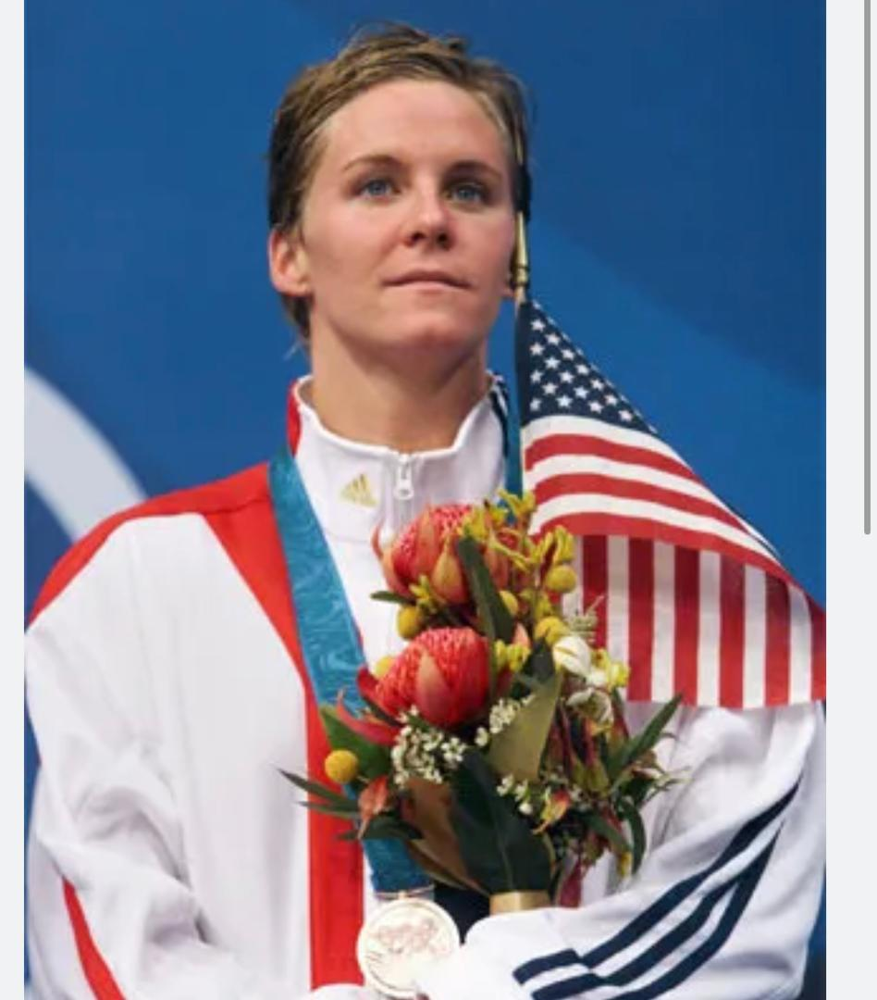
Nageur Americaine
12 medailles olympiques (8 or , 3 argent et 1 bronze)
« Every ounce of me is tired. I find myself asking, how much longer? ... But, I will and you will too. »
Sun Yang
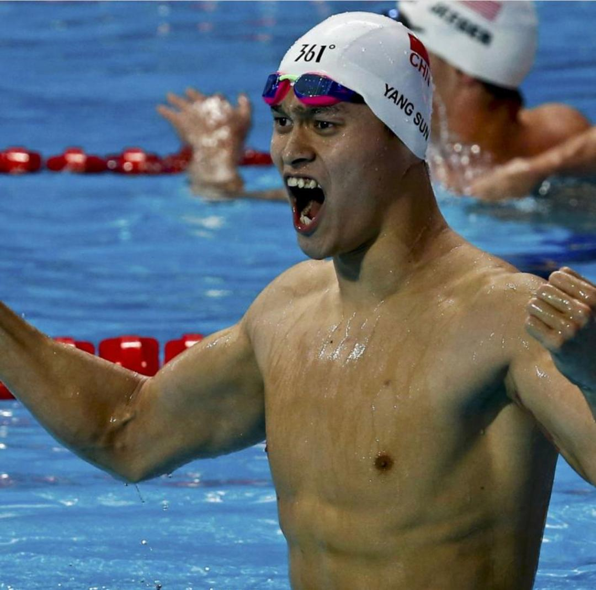
Nageur Chinois
triple champion olympique(2012,2016) et onze fois champion du monde en nage libre(200m,400m,800m,1500m)
« Je ne devrais pas avoir à subir ce genre d'insultes »
Omy Diop
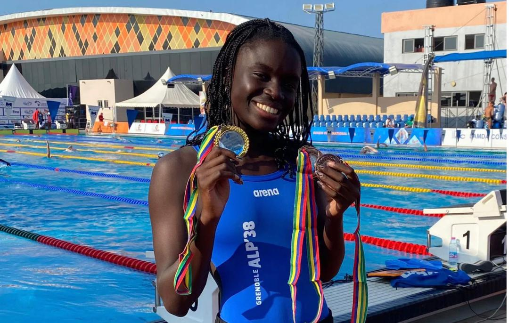
Nageuse Sénégalaise
4 médailles (1 or, 1 argent et 2 bronze)
« Mon principal but sera de faire un nouveau record national au 100 m papillon et essayer d'emmagasiner le plus d'expérience possible »